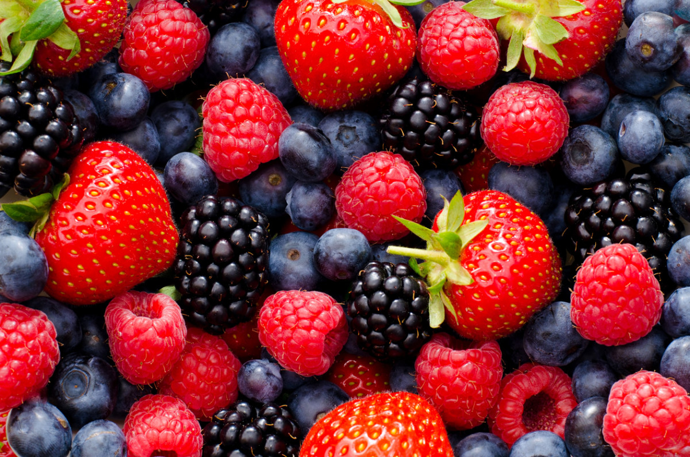

Berry

-
Carbohydrate Content: Berries like strawberries, raspberries, and
blackberries are lower in carbs than most fruits, with around 5-15 grams
of carbs per cup, depending on the type.
-
Net Carbs: Their high fiber content reduces net carbs, especially
in blackberries and raspberries, which makes them a popular low-carb
fruit choice.